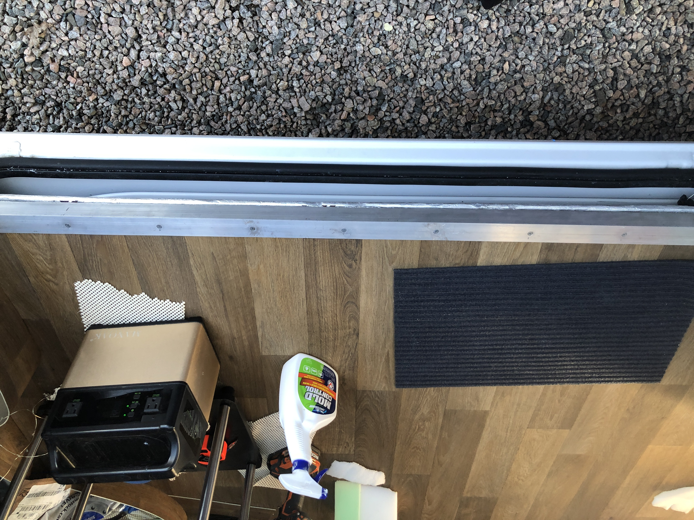
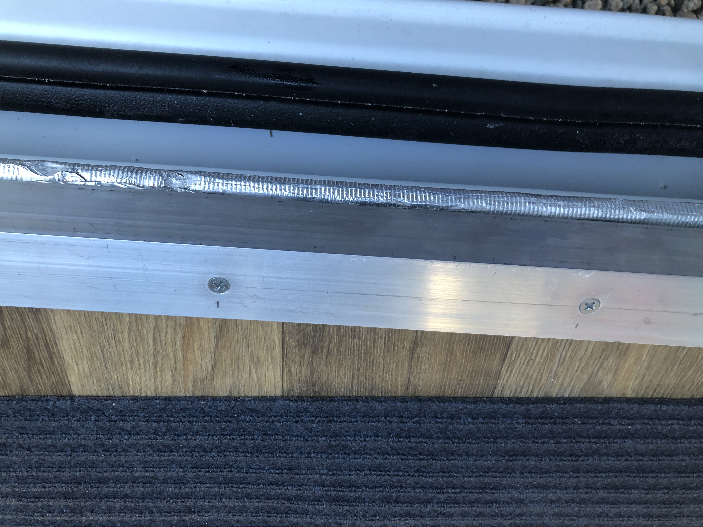

I started metalwork this week. It's a medium that I've been wanting to learn for some time. I got acquainted with almost every tool in the shop, including the mig welder and the water jet machine. I have big plans for the welder, but for the next few weeks I'm focusing on designed a custom solar panel rack for my van that will securing hold 850 watts of panels. There isn't anything on the market I can afford, nor do any of those overpriced racks have the ability to hold the size of panels I'm using.
What I learned from the process (or was reminded of): How to make custom metal parts, measure accurately, different methods of affixing these elements together and getting really efficient using a chop saw, hack saw, drill, file and my new favorite tool, a 6" combination square. This is a video of the progress to date...



